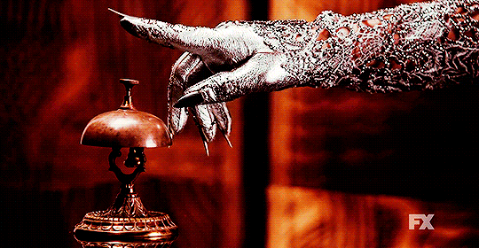
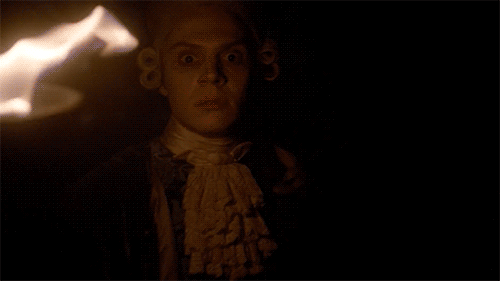

The story is about a broken family move in a mansion to try to fix their relationship as a "new Start" only to discover that their new home is hunted by all the ghosts that have died in the property.
The story shows patients, doctors, and nuns who occupy the Briarcliff Mental Institution founded to treat and house the criminally insane. Many of the patients, whom claim to be unjustly institutionalized are routinely subjects to supernatural and scientific influences, including demonic possessions and extraterrestrial abductions.
The story is about the descendants of the witches who survived the Salem Witch Trials, who are nearly extinct and are in danger once again. A mysterious all-girls boarding school has opened in New Orleans to protect and house young women who carry this unique bloodline, and keep them from the dangers of the outside world.
The story is about a struggling freak show led by Elsa Mars. Elsa dreams of finding a home for her "monsters", as well as her own fame. When conjoined twins Bette and Dot Tattler are taken to the hospital, Elsa sees her chance to finally drum up some business for her sideshow, hoping the two sisters will save her troupe once and for all. Two evil characters of the story are Stanley and Maggie Esmerelda, who want to kill the freaks for money.
The story is about a retro Hotel Cortez which was built to become a torture chamber for the customers by the founder James Patrick March. The story also shows the 111 year old vampire, Elizabeth Johnson, who has a demon child and takes care of the vampire children.
This story is about a couple who appear on a documentary called My Roanoke Nightmare, to recount a series of supernatural events that happened to them after Shelby and Matt relocated from Los Angeles to North Carolina following a miscarriage. During their stay at the house, the family has a terrifying experience, because their house is on the land where the Roanoke Colony moved after the famous disappearance, led by witch Scathach, Thomasin White, known as The Butcher, and her insane crew.
So far, my favorite season has been Season 3 - Coven. It contains different themes like witchcraft, voodoo, dealing with racism, death, and family feuds. In my opinion, Coven was a masterpiece.
 